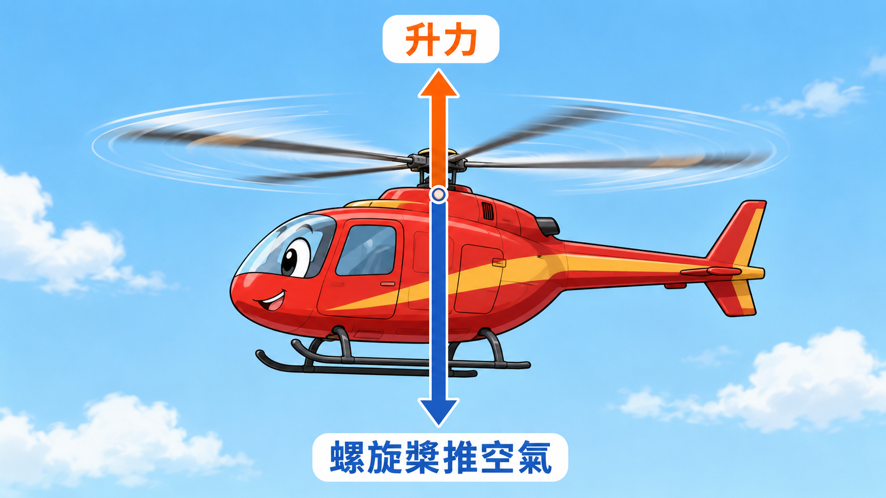
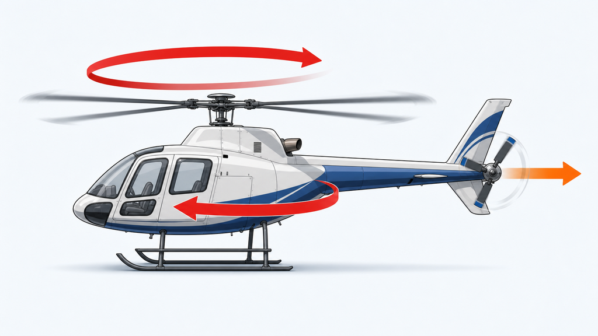

🚁 先看直升機怎麼飛起來

直升機只有一個大旋翼。它的工作原理跟上半節的螺旋槳一模一樣：
👉 槳把空氣用力往下推（藍色箭頭）
👉 反作用力把整台直升機往上抬（橘色箭頭）
升力夠大，直升機就飛起來了。到這裡都沒問題。
上半節知道了「反作用力」這件事。同一個原理，為什麼三種飛機長得完全不一樣？這一節就來解開謎底。
| 機種 | 怎麼產生升力 | 還要多做什麼 |
|---|---|---|
| ✈️ 飛機 | 翼面伯努利原理 | 需要前進的速度，停下來就會掉 |
| 🚁 直升機 | 大旋翼推力 | 要裝尾槳，否則機身會自己轉 |
| 🛸 四軸 ⭐ | 4 個螺旋槳推力 | 反扭矩自己抵消，不用尾槳 |
三種飛機都用反作用力，但解法不一樣。下面我們從直升機的問題講起。

直升機只有一個大旋翼。它的工作原理跟上半節的螺旋槳一模一樣：
👉 槳把空氣用力往下推（藍色箭頭）
👉 反作用力把整台直升機往上抬（橘色箭頭）
升力夠大，直升機就飛起來了。到這裡都沒問題。

大旋翼轉得越快，機身就越想往反方向轉（紅色弧形箭頭）。這個現象叫做「反扭矩」。
所以直升機後面要裝一個小尾槳（橘色箭頭）。它推出一個側向的力，剛好抵消反扭矩，機身才能穩住。
直升機要裝尾槳才能不打轉，那四軸呢？
下一頁來看：四軸用什麼聰明方法解決反扭矩 →